BRCA HER2 Pathology AI Findings
Simple display report for the current result.
The current primary analysis uses 171 strict high-trust TCGA-BRCA diagnostic H&E slides after HER2 label, slide-file, OpenSlide, and female-patient primary-tumor filtering. The female-patient filter follows the relevant TCGA sample-selection principle from Guardia et al., Genome Research 2025, PMID 40664477; the rest of our slide QC is specific to this pathology-AI project. The raw GigaTIME run still contains the previous 174-slide inference output, but the current summaries filter those predictions to the strict 171-slide analysis set.
Most interesting result: GigaTIME-derived H&E virtual mIF features reproducibly separate HER2-low from HER2-zero tumors. HER2-low is lower than HER2-zero for several virtual immune/myeloid/checkpoint and CK-associated channels.
One-Slide Takeaway
- Downloaded cohort checked: 183 TCGA-BRCA diagnostic slides.
- Strict high-trust primary analysis: 171 slides.
- Review before primary analysis: 9 slides.
- Excluded from primary analysis: 3 slides, all male HER2-positive cases.
- Groups: 53 HER2-positive, 57 HER2-low, 61 HER2-zero.
- GigaTIME sampling: 128 tissue tiles per primary-analysis slide, 21,888 tile predictions after filtering.
- Strongest finding: HER2-low versus HER2-zero, not HER2-positive diagnosis.
- Presentation-safe claim: image-derived GigaTIME features associate with HER2-low versus HER2-zero state differences; they do not yet provide clinical HER2 diagnosis or direct HER2 isoform detection.
Trustworthy Slide List
| Clinical HER2 group | Strict high-trust slides |
|---|---|
| HER2-positive | 53 |
| HER2-low | 57 |
| HER2-zero | 61 |
The strict list is in `docs/assets/clinical_her2_trustworthy_slide_list/high_trust_slides.csv`. The three excluded cases are male HER2-positive TCGA-BRCA patients. Guardia et al. also excluded male TCGA-BRCA samples for their HER2 isoform/ADC-resistance analysis; our additional file-integrity, OpenSlide, and H&E tile checks are project-specific.
Strongest Pairwise Result
Negative delta means HER2-low has lower mean virtual activation than HER2-zero.
| Channel | HER2-low mean | HER2-zero mean | Low-zero delta | p | BH q | Cliff's delta |
|---|---|---|---|---|---|---|
| CD68 | 0.0173 | 0.0227 | -0.0054 | 3.71e-04 | 0.0016 | -0.381 |
| CD11c | 0.0095 | 0.0128 | -0.0033 | 2.72e-04 | 0.0016 | -0.389 |
| PD-1 | 0.0905 | 0.1300 | -0.0395 | 2.25e-04 | 0.0016 | -0.394 |
| PD-L1 | 0.0416 | 0.0546 | -0.0130 | 3.02e-04 | 0.0016 | -0.386 |
| CK | 0.1674 | 0.2311 | -0.0638 | 1.29e-04 | 0.0016 | -0.409 |
| CD4 | 0.0438 | 0.0676 | -0.0238 | 6.15e-04 | 0.0019 | -0.366 |
| CD3 | 0.0478 | 0.0721 | -0.0243 | 7.78e-04 | 0.0019 | -0.359 |
| CD20 | 0.0429 | 0.0611 | -0.0182 | 0.0086 | 0.0161 | -0.281 |
| Ki67 | 0.0128 | 0.0133 | -5.34e-04 | 0.0194 | 0.0343 | -0.250 |
This is the cleanest current statistical result: HER2-low is lower than HER2-zero for multiple GigaTIME virtual immune/myeloid/checkpoint and tissue-context channels after correction for multiple testing.
Three-Group Pattern
| Channel | Kruskal p | BH q | Highest group | Lowest group | Max-min mean |
|---|---|---|---|---|---|
| CD11c | 2.04e-04 | 6.80e-04 | HER2-positive | HER2-low | 0.0079 |
| PD-1 | 9.79e-05 | 6.80e-04 | HER2-positive | HER2-low | 0.0525 |
| PD-L1 | 1.59e-04 | 6.80e-04 | HER2-positive | HER2-low | 0.0291 |
| CD3 | 4.50e-04 | 8.99e-04 | HER2-positive | HER2-low | 0.0328 |
| CD4 | 3.70e-04 | 8.99e-04 | HER2-positive | HER2-low | 0.0329 |
| CD68 | 6.90e-04 | 0.0011 | HER2-positive | HER2-low | 0.0155 |
| CK | 7.85e-04 | 0.0011 | HER2-zero | HER2-low | 0.0638 |
| Ki67 | 0.0025 | 0.0031 | HER2-positive | HER2-low | 0.0069 |
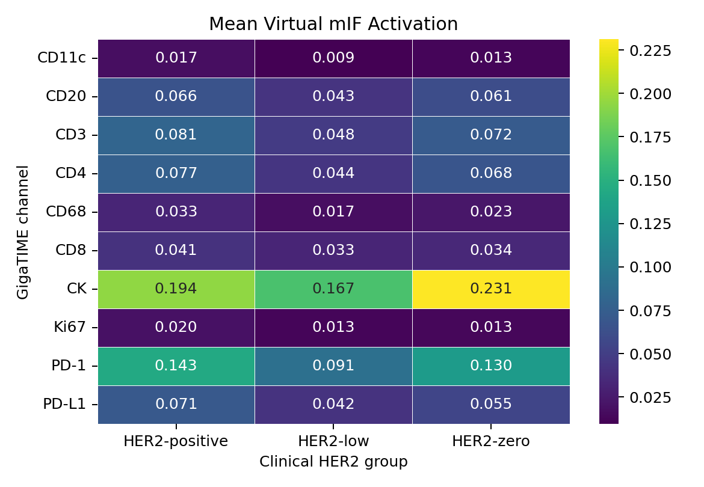
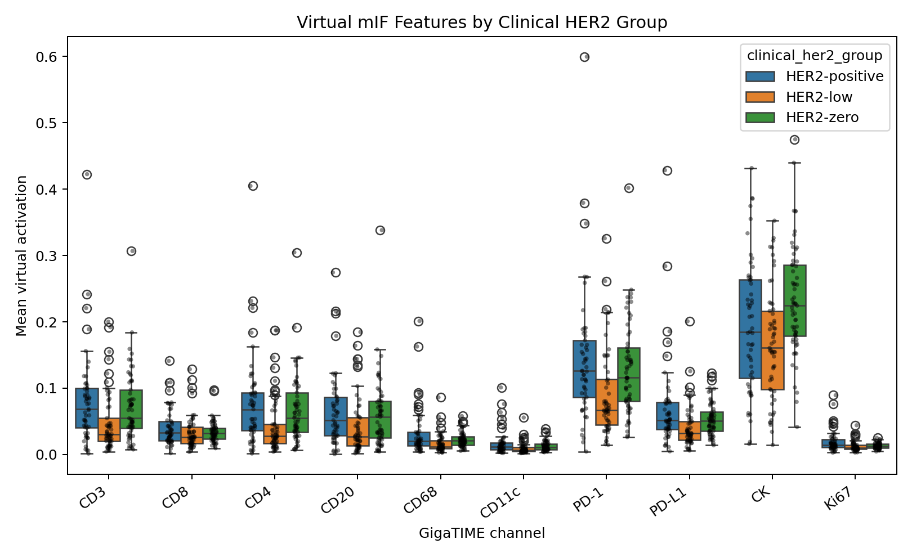
Cleanup View Result
The signal is not simply a blank-tile artifact. It persists after requiring more cellular tissue and partially persists after CK enrichment, but it weakens in the strictest CK-enriched view.
| Cleanup view | Channel | Low-zero delta | p | BH q |
|---|---|---|---|---|
| All sampled tissue | CD11c | -0.0033 | 2.72e-04 | 0.0020 |
| All sampled tissue | CD68 | -0.0054 | 3.71e-04 | 0.0020 |
| All sampled tissue | CK | -0.0638 | 1.29e-04 | 0.0020 |
| All sampled tissue | PD-L1 | -0.0130 | 3.02e-04 | 0.0020 |
| All sampled tissue | CD4 | -0.0238 | 6.15e-04 | 0.0020 |
| All sampled tissue | CD3 | -0.0243 | 7.78e-04 | 0.0021 |
| QC cellular tissue | CD11c | -0.0034 | 0.0012 | 0.0057 |
| QC cellular tissue | CD3 | -0.0280 | 0.0017 | 0.0057 |
| QC cellular tissue | CD4 | -0.0276 | 0.0016 | 0.0057 |
| QC cellular tissue | CD68 | -0.0053 | 0.0019 | 0.0057 |
| QC cellular tissue | CK | -0.0543 | 0.0017 | 0.0057 |
| QC cellular tissue | PD-L1 | -0.0135 | 5.03e-04 | 0.0057 |
| CK-enriched top 50% | CD3 | -0.0207 | 0.0028 | 0.0128 |
| CK-enriched top 50% | CD4 | -0.0200 | 0.0023 | 0.0128 |
| CK-enriched top 50% | CK | -0.0701 | 0.0021 | 0.0128 |
| CK-enriched top 50% | PD-L1 | -0.0104 | 0.0026 | 0.0128 |
| CK-enriched top 50% | CD68 | -0.0051 | 0.0039 | 0.0150 |
| CK-enriched top 50% | CD11c | -0.0023 | 0.0049 | 0.0156 |
| CK-enriched top 25% | CD4 | -0.0129 | 0.0066 | 0.0337 |
| CK-enriched top 25% | CD68 | -0.0045 | 0.0070 | 0.0337 |
| CK-enriched top 25% | CK | -0.0689 | 0.0042 | 0.0337 |
| CK-enriched top 25% | CD3 | -0.0131 | 0.0136 | 0.0462 |
| CK-enriched top 25% | PD-L1 | -0.0063 | 0.0147 | 0.0462 |
| CK-enriched top 25% | CD11c | -0.0015 | 0.0339 | 0.0708 |
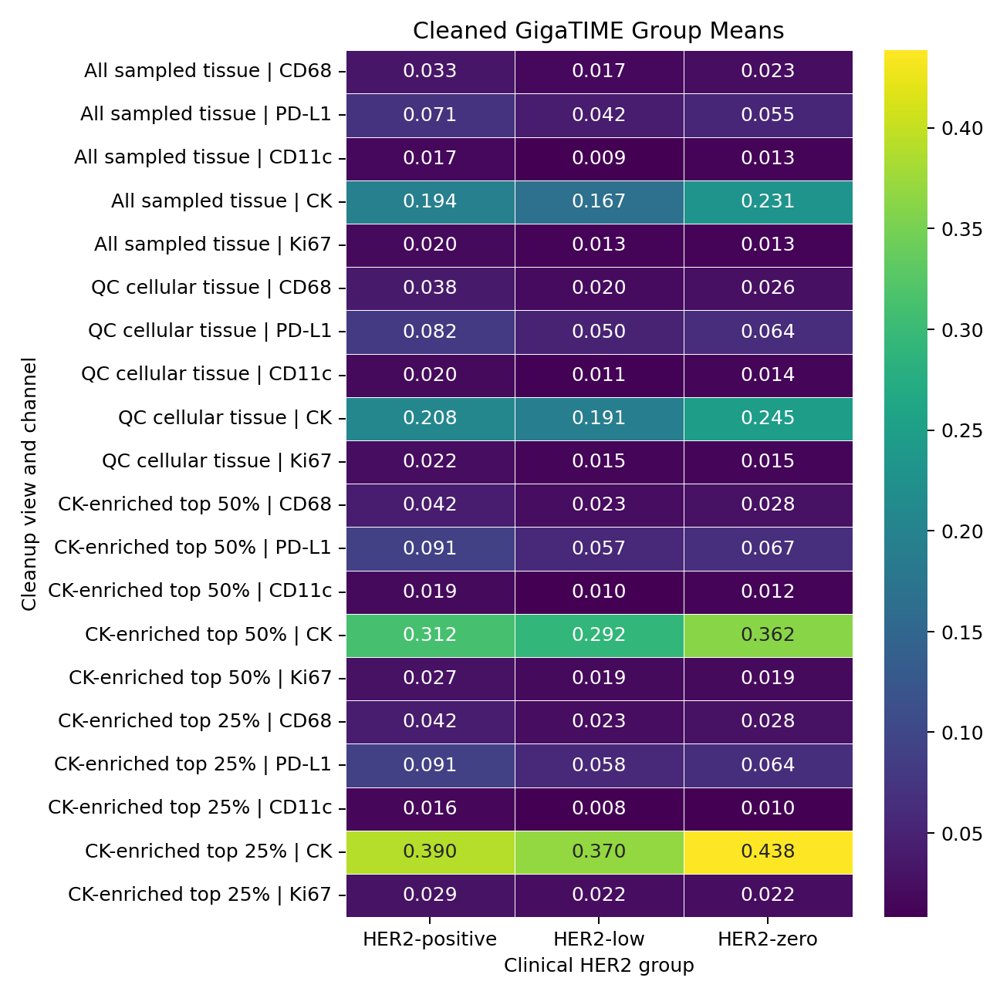
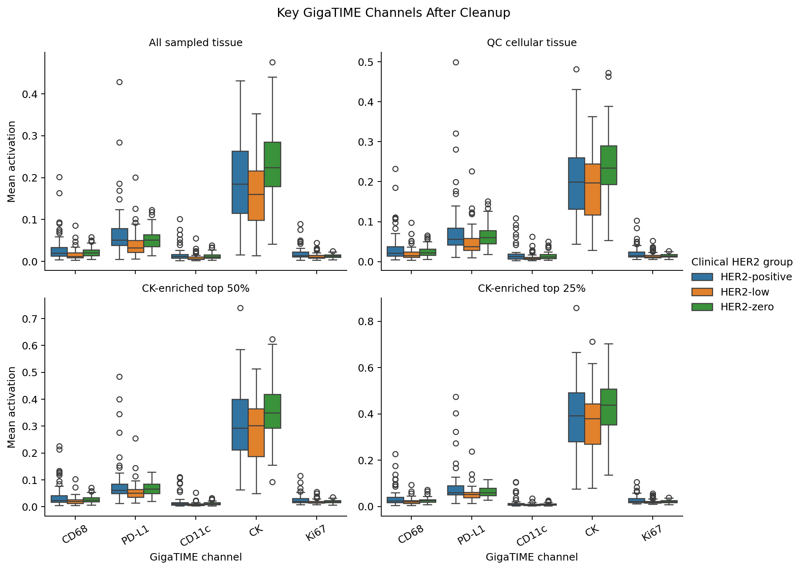
Top Cleanup Three-Group Signals
| Cleanup view | Channel | Kruskal p | BH q | Highest group | Lowest group | Max-min mean |
|---|---|---|---|---|---|---|
| All sampled tissue | CD11c | 2.04e-04 | 9.18e-04 | HER2-positive | HER2-low | 0.0079 |
| All sampled tissue | PD-L1 | 1.59e-04 | 9.18e-04 | HER2-positive | HER2-low | 0.0291 |
| All sampled tissue | CD3 | 4.50e-04 | 0.0010 | HER2-positive | HER2-low | 0.0328 |
| All sampled tissue | CD4 | 3.70e-04 | 0.0010 | HER2-positive | HER2-low | 0.0329 |
| All sampled tissue | CD68 | 6.90e-04 | 0.0012 | HER2-positive | HER2-low | 0.0155 |
| All sampled tissue | CK | 7.85e-04 | 0.0012 | HER2-zero | HER2-low | 0.0638 |
| QC cellular tissue | CD11c | 0.0016 | 0.0035 | HER2-positive | HER2-low | 0.0090 |
| QC cellular tissue | CD3 | 0.0014 | 0.0035 | HER2-positive | HER2-low | 0.0373 |
| QC cellular tissue | CD4 | 0.0011 | 0.0035 | HER2-positive | HER2-low | 0.0375 |
| QC cellular tissue | PD-L1 | 6.68e-04 | 0.0035 | HER2-positive | HER2-low | 0.0320 |
| QC cellular tissue | CD68 | 0.0038 | 0.0058 | HER2-positive | HER2-low | 0.0177 |
| QC cellular tissue | CK | 0.0039 | 0.0058 | HER2-zero | HER2-low | 0.0543 |
| CK-enriched top 50% | CD3 | 0.0020 | 0.0091 | HER2-positive | HER2-low | 0.0329 |
| CK-enriched top 50% | CD4 | 0.0019 | 0.0091 | HER2-positive | HER2-low | 0.0335 |
| CK-enriched top 50% | CK | 0.0043 | 0.0097 | HER2-zero | HER2-low | 0.0701 |
| CK-enriched top 50% | PD-L1 | 0.0035 | 0.0097 | HER2-positive | HER2-low | 0.0340 |
| CK-enriched top 50% | CD11c | 0.0061 | 0.0109 | HER2-positive | HER2-low | 0.0094 |
| CK-enriched top 50% | CD68 | 0.0098 | 0.0147 | HER2-positive | HER2-low | 0.0195 |
Classifier Result
This is diagnostic-model style evidence, but it is still exploratory and not clinical.
| Input view | Best feature set | N | Accuracy | Balanced accuracy | Macro AUC | Sensitivity | Specificity |
|---|---|---|---|---|---|---|---|
| All sampled tissue | Mean + fraction channels | 118 | 72.9% | 72.7% | 0.787 | 77.0% | 68.4% |
| QC cellular tissue | Mean channels | 118 | 72.0% | 71.9% | 0.741 | 77.0% | 66.7% |
| CK-enriched top 50% | Mean channels | 118 | 70.3% | 70.2% | 0.752 | 75.4% | 64.9% |
| CK-enriched top 25% | Mean + fraction channels | 118 | 71.2% | 71.1% | 0.749 | 73.8% | 68.4% |
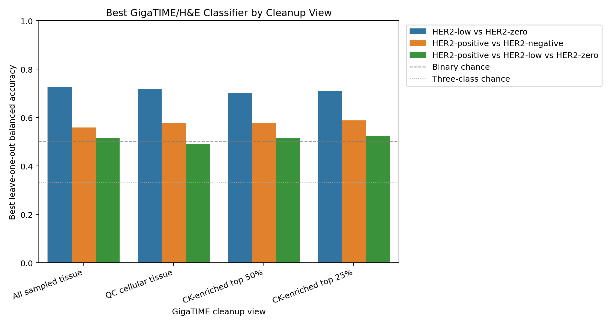
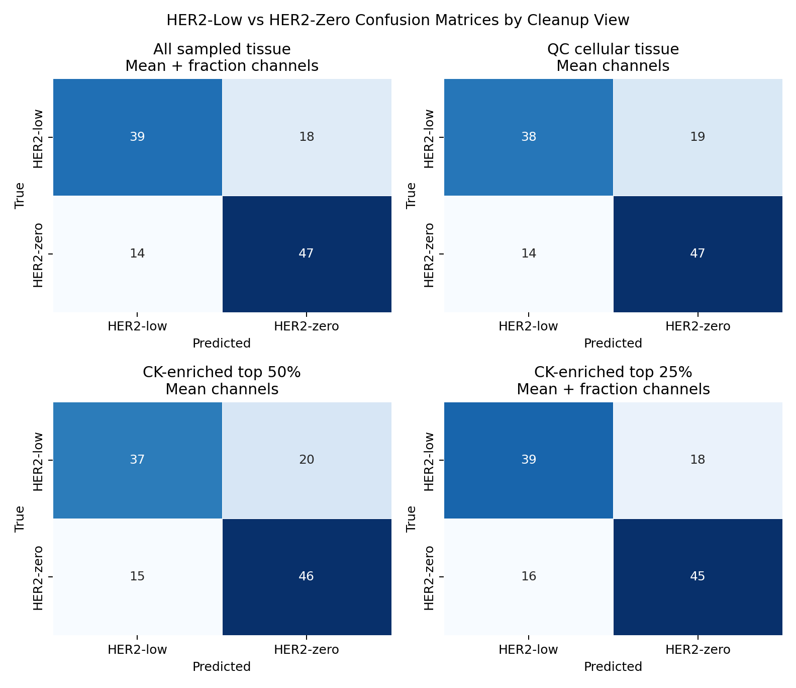
Where The Classifier Is Weak
| Task | Best input view | Best feature set | N | Balanced accuracy | Macro AUC | Sensitivity | Specificity |
|---|---|---|---|---|---|---|---|
| HER2-positive vs HER2-negative | CK-enriched top 25% | Mean + fraction channels | 171 | 58.9% | 0.622 | 24.5% | 93.2% |
| HER2-positive vs HER2-low vs HER2-zero | CK-enriched top 25% | Mean channels | 171 | 52.4% | 0.679 |
HER2-positive detection remains weak. The current GigaTIME/H&E signal is stronger for HER2-low versus HER2-zero than for classic HER2-positive diagnosis.
Case-Level Driver Check
The case-level check asks whether the HER2-low versus HER2-zero result is broad enough to believe or whether a few unusual slides carry the signal. A score was built from the significant low-zero virtual channels in each cleanup view. Higher scores are more HER2-zero-like; lower scores are more HER2-low-like.
| Clinical group | N | Mean zero-like score | Median zero-like score |
|---|---|---|---|
| HER2-low | 57 | -0.219 | -0.488 |
| HER2-zero | 61 | 0.205 | 0.123 |
71 of 118 HER2-low/HER2-zero slides matched the expected direction in at least 3 of 4 cleanup views. 47 slides showed the opposite profile in at least 2 views, and 37 cases were misclassified by the best low-vs-zero classifier in at least 2 cleanup views. This is promising, but it also gives us a concrete manual-review list.
| Cleanup view | N signal channels | Channels |
|---|---|---|
| All sampled tissue | 8 | CD11c, CD68, CK, PD-L1, CD4, CD3, CD20, Ki67 |
| QC cellular tissue | 7 | CD11c, CD3, CD4, CD68, CK, PD-L1, CD20 |
| CK-enriched top 50% | 7 | CD3, CD4, CK, PD-L1, CD68, CD11c, CD20 |
| CK-enriched top 25% | 5 | CD4, CD68, CK, CD3, PD-L1 |
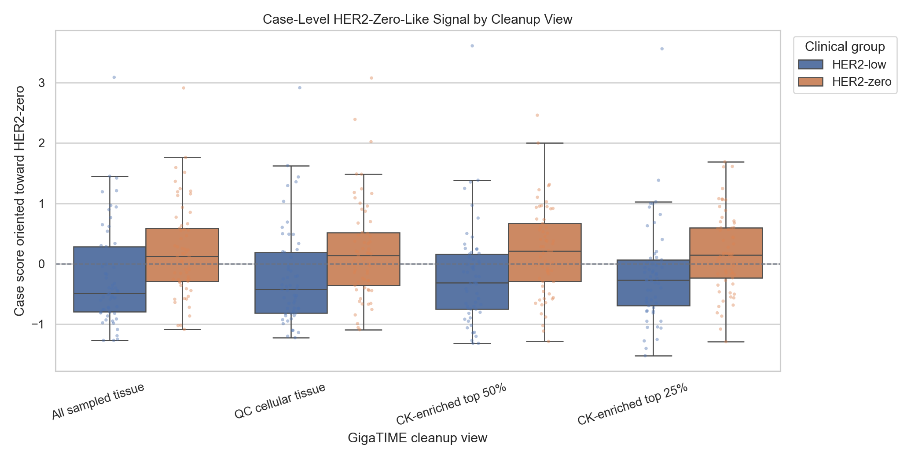
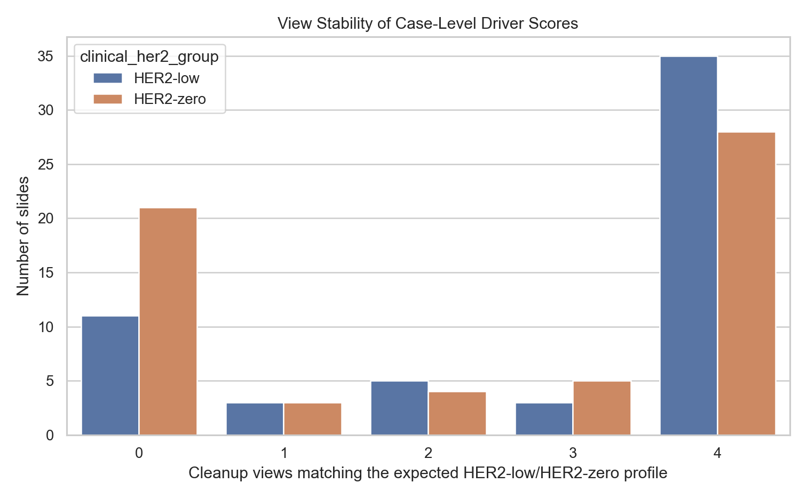
Manual Review Shortlist
These cases are the first ones to inspect in H&E and virtual mIF-like overlays. They are not failures; they are the cases most likely to reveal label noise, sampling problems, artifact, or interesting biology.
| Case | Group | HER2 detail | Wrong classifier views | Opposite-profile views | All-tissue score |
|---|---|---|---|---|---|
| TCGA-A2-A0EW | HER2-zero | HER2-zero_IHC0_ISH-negative | 4 | 4 | -1.021 |
| TCGA-A7-A13E | HER2-low | HER2-low_IHC2_ISH-negative | 4 | 4 | 0.940 |
| TCGA-AO-A03N | HER2-zero | HER2-zero_IHC0_ISH-not-evaluated | 4 | 4 | -1.026 |
| TCGA-AO-A0JG | HER2-low | HER2-low_IHC1_ISH-not-evaluated | 4 | 4 | 0.299 |
| TCGA-AR-A0U2 | HER2-low | HER2-low_IHC1_ISH-not-evaluated | 4 | 4 | 1.419 |
| TCGA-BH-A0B9 | HER2-zero | HER2-zero_IHC0_ISH-not-evaluated | 4 | 4 | -0.579 |
| TCGA-BH-A0DH | HER2-zero | HER2-zero_IHC0_ISH-not-evaluated | 4 | 4 | -0.723 |
| TCGA-D8-A27K | HER2-low | HER2-low_IHC1_ISH-not-evaluated | 4 | 4 | 0.896 |
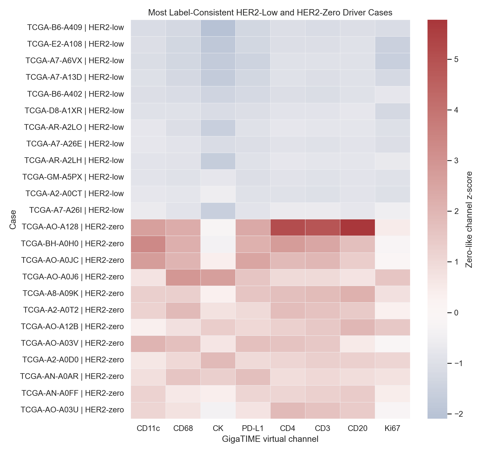
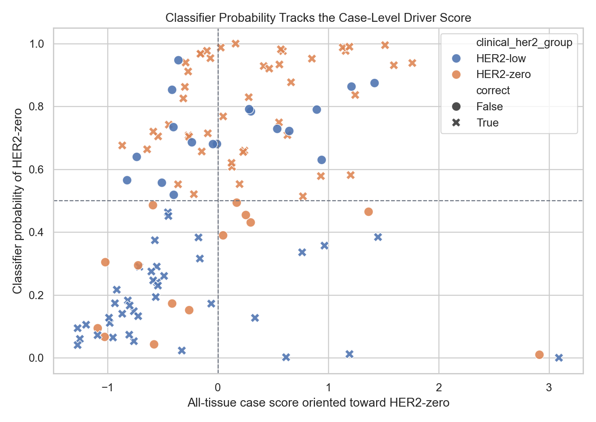
Visual QC Spot Check
A small visual QC set was rendered from the case-driver shortlist. This is the most important cautionary update: the low-like tiles, including label-consistent HER2-low and opposite-profile HER2-zero examples, often have high tissue fraction but very low virtual CK, CD68, PD-L1, and CD11c. Visually, these can look stromal/collagen-rich rather than clearly tumor-rich. That means the current HER2-low versus HER2-zero signal may partly reflect tissue composition unless a pathologist confirms tumor-rich regions.
| Review category | Group | Tiles | Mean tissue | Mean zero-like tile score | Mean CK | Mean CD68 | Mean PD-L1 | Mean CD11c |
|---|---|---|---|---|---|---|---|---|
| label consistent her2 low | HER2-low | 8 | 0.987 | -0.605 | 3.08e-04 | 1.62e-04 | 6.32e-04 | 1.74e-04 |
| label consistent her2 zero | HER2-zero | 8 | 0.955 | 1.675 | 0.0487 | 0.1300 | 0.3153 | 0.1173 |
| opposite profile manual review | HER2-low | 8 | 0.923 | 2.800 | 0.0684 | 0.1786 | 0.3879 | 0.1483 |
| opposite profile manual review | HER2-zero | 8 | 0.986 | -0.618 | 0.0012 | 2.57e-04 | 0.0011 | 3.47e-04 |
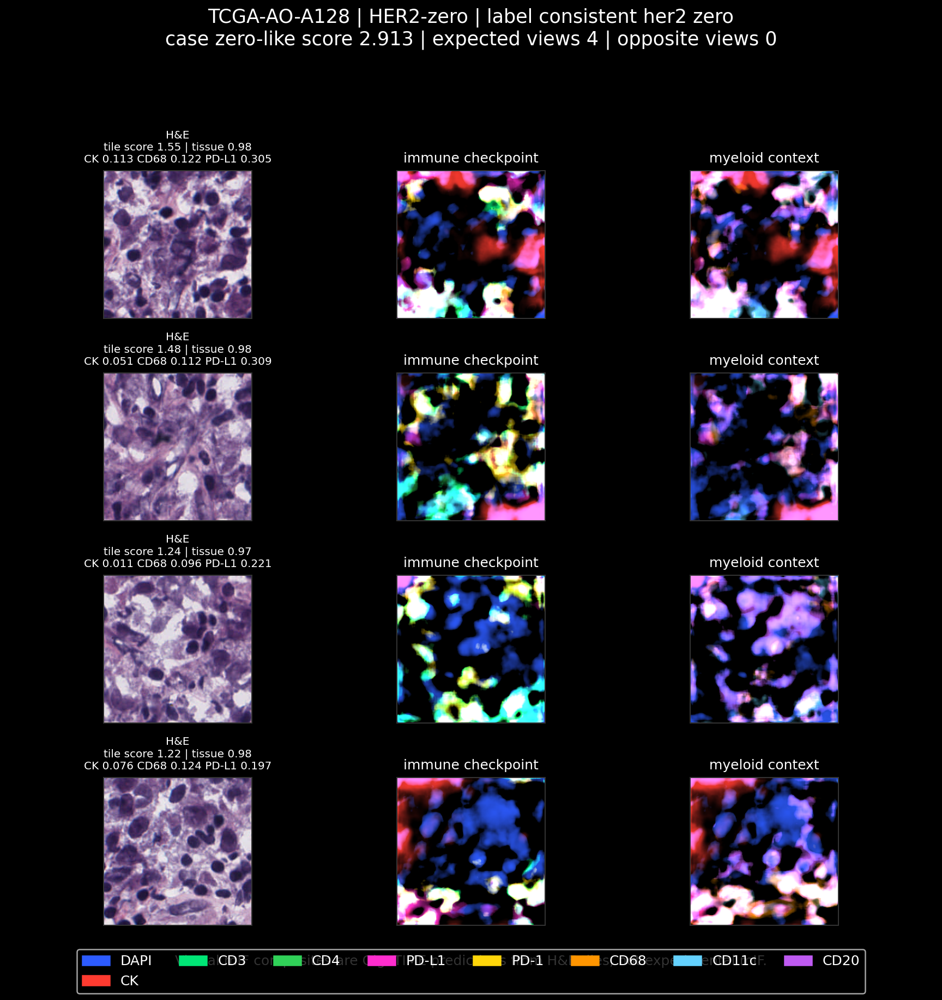
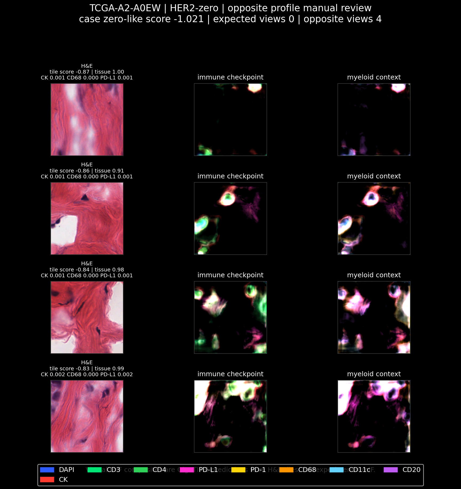
Full visual QC report: `docs/clinical_her2_high_trust_tile128_case_driver_visual_qc.md`.
Tissue-Composition Sensitivity
We quantified the visual QC caveat across all HER2-low and HER2-zero slides. A low-marker tile is a tissue tile whose mean virtual CK/CD68/PD-L1/CD11c/CD3/CD4/CD20/Ki67 marker burden is in the bottom quartile. HER2-low has substantially more low-marker tiles than HER2-zero.
| Metric | HER2-low mean | HER2-zero mean | Low-zero delta | BH q | Cliff |
|---|---|---|---|---|---|
| Fraction low-marker tiles | 0.3492 | 0.1805 | 0.1688 | 2.65e-04 | 0.443 |
| Fraction very-low-marker tiles | 0.1498 | 0.0605 | 0.0894 | 2.65e-04 | 0.428 |
| Mean DAPI | 0.2615 | 0.3459 | -0.0844 | 2.65e-04 | -0.419 |
| Mean marker burden | 0.0479 | 0.0669 | -0.0190 | 2.88e-04 | -0.404 |
| Mean CK | 0.1674 | 0.2311 | -0.0638 | 2.88e-04 | -0.409 |
| Fraction high-marker tiles | 0.1675 | 0.2865 | -0.1190 | 0.0014 | -0.354 |
| Fraction high-CK QC tiles | 0.1450 | 0.2179 | -0.0728 | 0.0019 | -0.339 |
| Fraction low-CK QC tiles | 0.2111 | 0.1364 | 0.0747 | 0.0044 | 0.308 |
The case-driver score also tracks marker/tissue composition very strongly. This is partly expected because the driver score is built from GigaTIME marker channels, but it confirms that the current signal is composition-sensitive.
| Metric | N | Spearman rho | BH q |
|---|---|---|---|
| mean_marker_burden | 118 | 0.980 | 7.67e-82 |
| fraction_high_marker_q75 | 118 | 0.947 | 1.32e-58 |
| mean_DAPI | 118 | 0.913 | 1.97e-46 |
| fraction_low_marker_q25 | 118 | -0.782 | 3.15e-25 |
| fraction_very_low_marker_q10 | 118 | -0.722 | 4.90e-20 |
| mean_CK | 118 | 0.601 | 9.51e-13 |
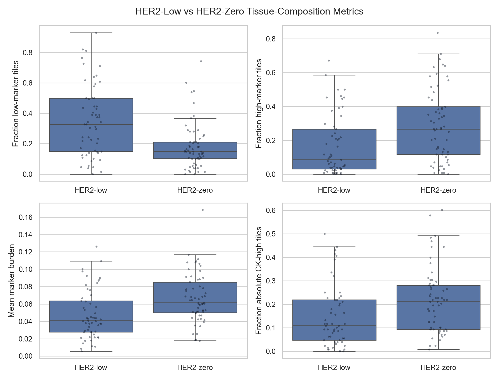
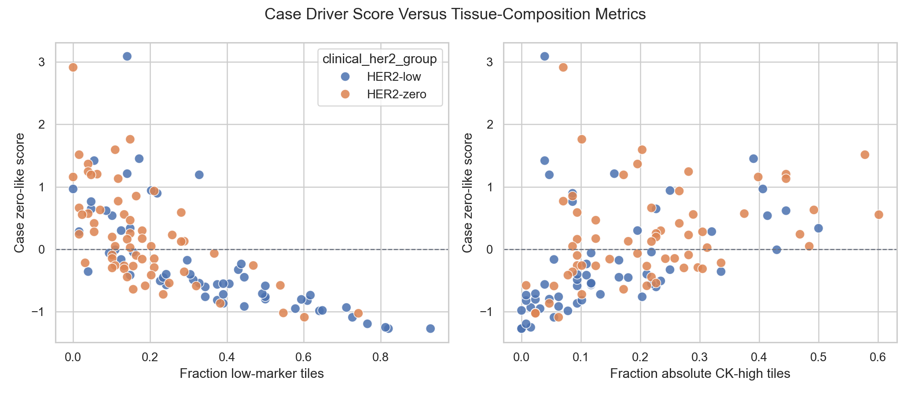
Composition Adjustment
The strongest caution is the adjusted model: after adjusting only for low-marker tile fraction, most HER2-low versus HER2-zero channel effects collapse. This does not make the project bad; it tells us the honest paper angle is tissue-context association unless tumor-rich/pathologist-approved tiles reproduce the result.
| Channel | Unadjusted beta | Unadjusted q | Low-marker-adjusted beta | Low-marker-adjusted q | Mean-CK-adjusted beta | Mean-CK-adjusted q |
|---|---|---|---|---|---|---|
| CD68 | -0.0054 | 0.0392 | 5.27e-04 | 0.9103 | -0.0025 | 0.3929 |
| PD-L1 | -0.0130 | 0.0315 | 5.62e-04 | 0.9103 | -0.0068 | 0.3406 |
| PD-1 | -0.0395 | 0.0091 | -0.0053 | 0.9103 | -0.0238 | 0.1933 |
| CD11c | -0.0033 | 0.0408 | -1.72e-04 | 0.9103 | -0.0026 | 0.1933 |
| CD4 | -0.0238 | 0.0185 | -0.0031 | 0.9103 | -0.0178 | 0.1933 |
| CD3 | -0.0243 | 0.0185 | -0.0023 | 0.9103 | -0.0172 | 0.1933 |
| CK | -0.0638 | 5.82e-04 | -0.0064 | 0.9103 | 9.20e-18 | 0.6646 |
In a stricter absolute CK-high proxy view, some immune/T-cell channels remain different, but the signal weakens and fewer slides qualify.
| Channel | N low | N zero | Low-zero delta | BH q |
|---|---|---|---|---|
| CD11c | 47 | 58 | -0.0017 | 0.0337 |
| CD4 | 47 | 58 | -0.0123 | 0.0337 |
| CD3 | 47 | 58 | -0.0114 | 0.0337 |
| PD-1 | 47 | 58 | -0.0188 | 0.0349 |
| CD68 | 47 | 58 | -0.0016 | 0.0882 |
| PD-L1 | 47 | 58 | -0.0018 | 0.1254 |
| CK | 47 | 58 | -0.0103 | 0.1681 |
| CD20 | 47 | 58 | 2.77e-04 | 0.5861 |
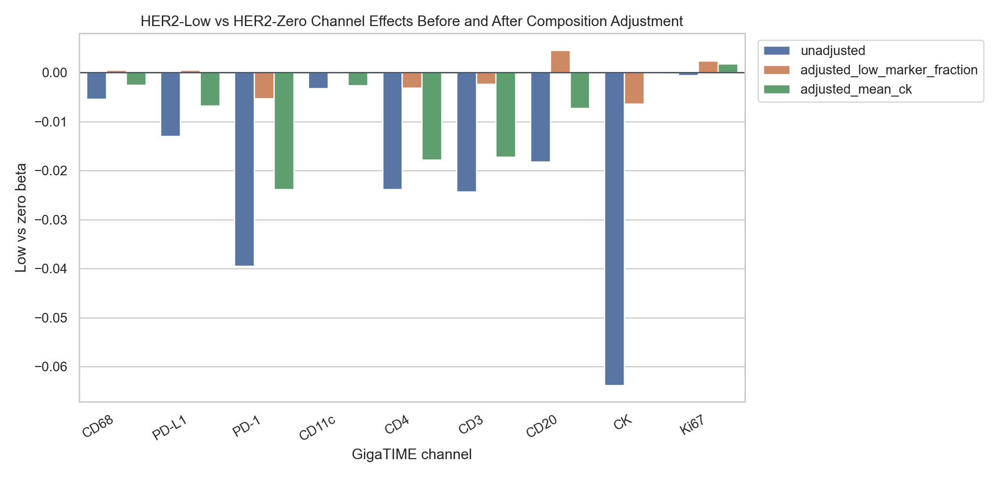
Full tissue-composition report: `docs/clinical_her2_high_trust_tile128_tissue_composition_sensitivity.md`.
Tumor-Rich Proxy Sensitivity
We then tested stricter virtual tumor-rich proxy filters. These are still GigaTIME-derived proxies, not pathologist tumor annotations. The result is nuanced: individual low-versus-zero channel tests weaken in the strictest fixed-count CK views, but the multichannel low-vs-zero classifier remains around 0.71-0.76 balanced accuracy. That means the signal is not solved, but it is still worth pursuing with real tumor-rich review.
| Proxy view | Group | Slides passing min tiles | Median retained tiles | Median retained fraction |
|---|---|---|---|---|
| Top 16 CK tiles per slide | HER2-positive | 53 | 16.0 | 0.125 |
| Top 16 CK tiles per slide | HER2-low | 57 | 16.0 | 0.125 |
| Top 16 CK tiles per slide | HER2-zero | 61 | 16.0 | 0.125 |
| Top 8 CK tiles per slide | HER2-positive | 53 | 8.0 | 0.062 |
| Top 8 CK tiles per slide | HER2-low | 57 | 8.0 | 0.062 |
| Top 8 CK tiles per slide | HER2-zero | 61 | 8.0 | 0.062 |
| Top 16 CK, non-low-marker | HER2-positive | 52 | 16.0 | 0.125 |
| Top 16 CK, non-low-marker | HER2-low | 56 | 16.0 | 0.125 |
| Top 16 CK, non-low-marker | HER2-zero | 61 | 16.0 | 0.125 |
| Absolute CK-high QC tiles | HER2-positive | 45 | 19.0 | 0.148 |
| Absolute CK-high QC tiles | HER2-low | 47 | 15.0 | 0.117 |
| Absolute CK-high QC tiles | HER2-zero | 58 | 28.0 | 0.219 |
Low-versus-zero univariate channel effects under stricter proxy filters:
| Proxy view | Channel | N low | N zero | Low-zero delta | BH q |
|---|---|---|---|---|---|
| Top 16 CK tiles per slide | CK | 57 | 61 | -0.0703 | 0.0395 |
| Top 16 CK tiles per slide | CD68 | 57 | 61 | -0.0043 | 0.0482 |
| Top 16 CK tiles per slide | PD-1 | 57 | 61 | -0.0206 | 0.0482 |
| Top 16 CK tiles per slide | PD-L1 | 57 | 61 | -0.0054 | 0.0666 |
| Top 16 CK tiles per slide | CD4 | 57 | 61 | -0.0095 | 0.0782 |
| Top 16 CK tiles per slide | CD3 | 57 | 61 | -0.0092 | 0.1056 |
| Top 16 CK tiles per slide | CD11c | 57 | 61 | -0.0012 | 0.1538 |
| Top 8 CK tiles per slide | CK | 57 | 61 | -0.0663 | 0.0551 |
| Top 8 CK tiles per slide | CD4 | 57 | 61 | -0.0049 | 0.1641 |
| Top 8 CK tiles per slide | CD68 | 57 | 61 | -0.0034 | 0.1641 |
| Top 8 CK tiles per slide | PD-1 | 57 | 61 | -0.0124 | 0.1641 |
| Top 8 CK tiles per slide | CD11c | 57 | 61 | -8.86e-04 | 0.1674 |
| Top 8 CK tiles per slide | CD3 | 57 | 61 | -0.0035 | 0.1674 |
| Top 8 CK tiles per slide | PD-L1 | 57 | 61 | -0.0023 | 0.1674 |
| Top 16 CK, non-low-marker | CK | 56 | 61 | -0.0648 | 0.0588 |
| Top 16 CK, non-low-marker | CD68 | 56 | 61 | -0.0038 | 0.0808 |
| Top 16 CK, non-low-marker | PD-1 | 56 | 61 | -0.0188 | 0.0808 |
| Top 16 CK, non-low-marker | PD-L1 | 56 | 61 | -0.0044 | 0.1093 |
| Top 16 CK, non-low-marker | CD4 | 56 | 61 | -0.0088 | 0.1284 |
| Top 16 CK, non-low-marker | CD3 | 56 | 61 | -0.0084 | 0.1568 |
| Top 16 CK, non-low-marker | CD11c | 56 | 61 | -0.0011 | 0.2656 |
| Absolute CK-high QC tiles | CD11c | 47 | 58 | -0.0017 | 0.0337 |
| Absolute CK-high QC tiles | CD3 | 47 | 58 | -0.0114 | 0.0337 |
| Absolute CK-high QC tiles | CD4 | 47 | 58 | -0.0123 | 0.0337 |
| Absolute CK-high QC tiles | PD-1 | 47 | 58 | -0.0188 | 0.0349 |
| Absolute CK-high QC tiles | CD68 | 47 | 58 | -0.0016 | 0.0882 |
| Absolute CK-high QC tiles | PD-L1 | 47 | 58 | -0.0018 | 0.1254 |
| Absolute CK-high QC tiles | CK | 47 | 58 | -0.0103 | 0.1681 |
Low-versus-zero classifier under the same proxy filters:
| Proxy view | Best feature set | N | Accuracy | Balanced accuracy | Macro AUC | Sensitivity | Specificity |
|---|---|---|---|---|---|---|---|
| QC cellular tissue | Mean channels | 118 | 72.0% | 71.9% | 0.741 | 77.0% | 66.7% |
| CK top 25% within slide | Mean + fraction channels | 117 | 70.9% | 70.8% | 0.744 | 73.8% | 67.9% |
| Top 16 CK tiles per slide | Mean channels | 118 | 71.2% | 71.1% | 0.766 | 73.8% | 68.4% |
| Top 8 CK tiles per slide | Mean channels | 118 | 72.9% | 72.7% | 0.755 | 77.0% | 68.4% |
| Top 16 CK, non-low-marker | Mean channels | 117 | 70.9% | 70.8% | 0.761 | 73.8% | 67.9% |
| Absolute CK-high QC tiles | Mean channels | 105 | 77.1% | 76.1% | 0.782 | 86.2% | 66.0% |
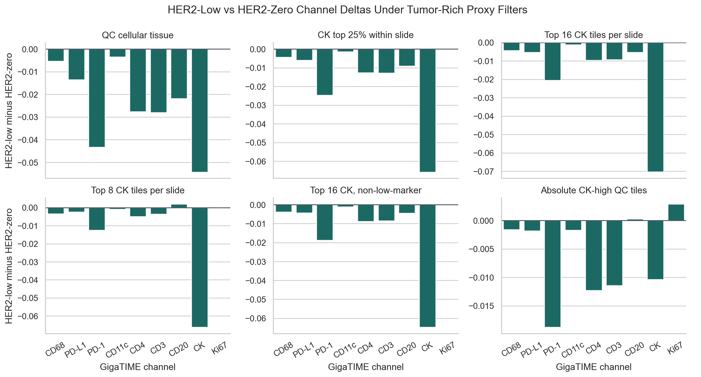
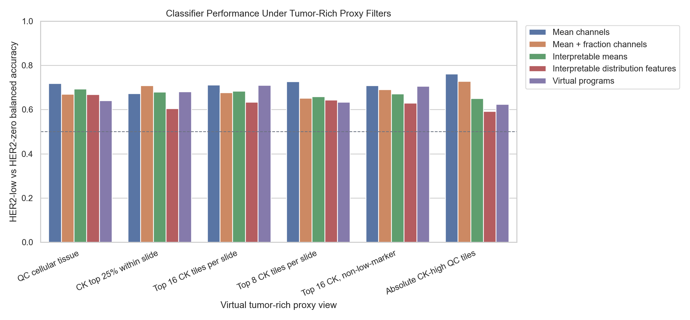
Full tumor-proxy report: `docs/clinical_her2_high_trust_tile128_tumor_proxy_sensitivity.md`.
Classifier Permutation Sanity Check
We also asked a blunt question: if we shuffle the HER2-low/HER2-zero labels, do these classifiers still look good? They should not. This is not a final clinical validation because the feature views were selected after earlier analyses, but it is an important sanity check that the classifier signal is not obviously random label structure.
| Proxy view | Feature set | N | Features | LOOCV balanced accuracy | Repeated-CV balanced accuracy | Null mean | Null 95% | Empirical p | BH q | Repeated-CV AUC |
|---|---|---|---|---|---|---|---|---|---|---|
| QC cellular tissue | Mean channels | 118 | 23 | 71.9% | 70.5% | 48.4% | 56.6% | 0.0099 | 0.0099 | 0.744 |
| CK top 25% within slide | Mean + fraction channels | 117 | 46 | 70.8% | 69.3% | 48.5% | 55.7% | 0.0099 | 0.0099 | 0.731 |
| Top 16 CK tiles per slide | Mean channels | 118 | 23 | 71.1% | 70.5% | 48.5% | 56.1% | 0.0099 | 0.0099 | 0.763 |
| Top 8 CK tiles per slide | Mean channels | 118 | 23 | 72.7% | 71.6% | 48.8% | 58.6% | 0.0099 | 0.0099 | 0.741 |
| Top 16 CK, non-low-marker | Mean channels | 117 | 23 | 70.8% | 71.0% | 48.2% | 56.7% | 0.0099 | 0.0099 | 0.767 |
| Absolute CK-high QC tiles | Mean channels | 105 | 23 | 76.1% | 72.9% | 48.4% | 57.5% | 0.0099 | 0.0099 | 0.764 |
Every tested view stayed above its shuffled-label null distribution with empirical p = 0.0099 and BH q = 0.0099. This supports a real label-associated image pattern, but it still does not solve the tissue-composition caveat or prove HER2 isoform biology.
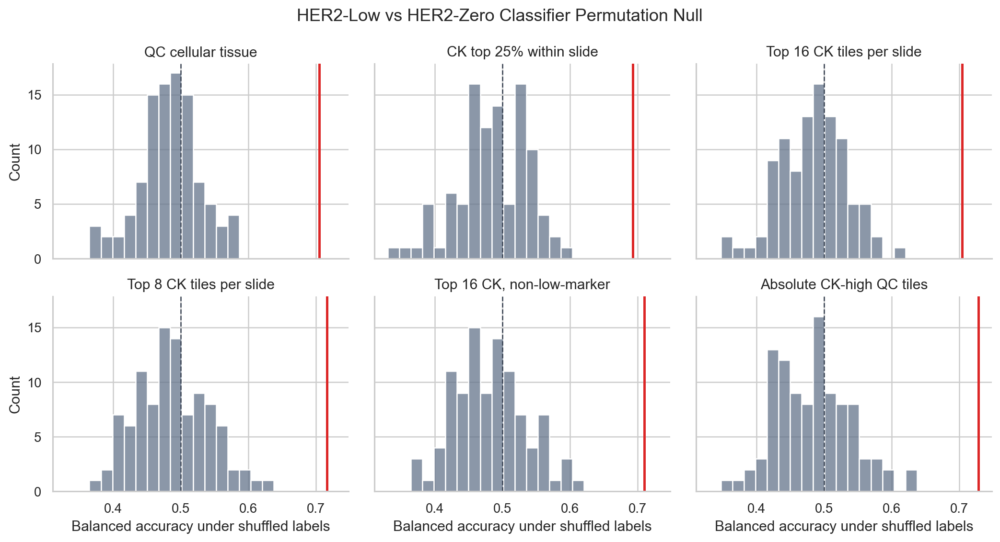
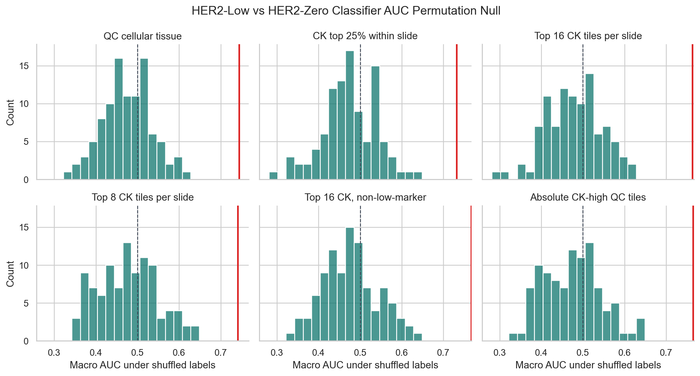
Full classifier permutation report: `docs/clinical_her2_high_trust_tile128_classifier_permutation_sanity.md`.
Nested Classifier Model Selection
The previous permutation test fixed the feature set that had already been selected. This stricter check chooses the best feature set inside each training fold, then evaluates the held-out fold. In plain language: the model has to pick its recipe without seeing the test samples.
| Proxy view | N | Most selected feature set | Selected folds | Nested balanced accuracy | Nested AUC | Null mean | Null 95% | Empirical p | BH q |
|---|---|---|---|---|---|---|---|---|---|
| QC cellular tissue | 118 | Mean channels | 9 | 67.4% | 0.717 | 49.8% | 57.7% | 0.0323 | 0.0323 |
| CK top 25% within slide | 117 | Mean channels | 7 | 67.2% | 0.706 | 50.0% | 57.8% | 0.0323 | 0.0323 |
| Top 16 CK tiles per slide | 118 | Mean channels | 7 | 70.6% | 0.731 | 50.6% | 56.6% | 0.0323 | 0.0323 |
| Top 8 CK tiles per slide | 118 | Mean channels | 13 | 72.1% | 0.739 | 51.4% | 56.5% | 0.0323 | 0.0323 |
| Top 16 CK, non-low-marker | 117 | Mean channels | 8 | 67.6% | 0.717 | 49.2% | 54.8% | 0.0323 | 0.0323 |
| Absolute CK-high QC tiles | 105 | Mean channels | 11 | 71.7% | 0.766 | 50.5% | 55.3% | 0.0323 | 0.0323 |
The nested balanced accuracies stay around 67-72%, and all tested views remain above the fully nested shuffled-label null. This is stronger classifier-methodology evidence than the post-hoc permutation check, but it is still internal validation rather than clinical proof.
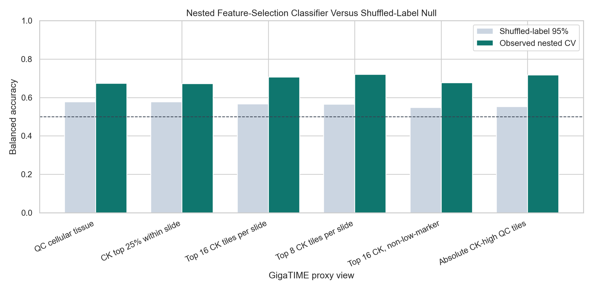
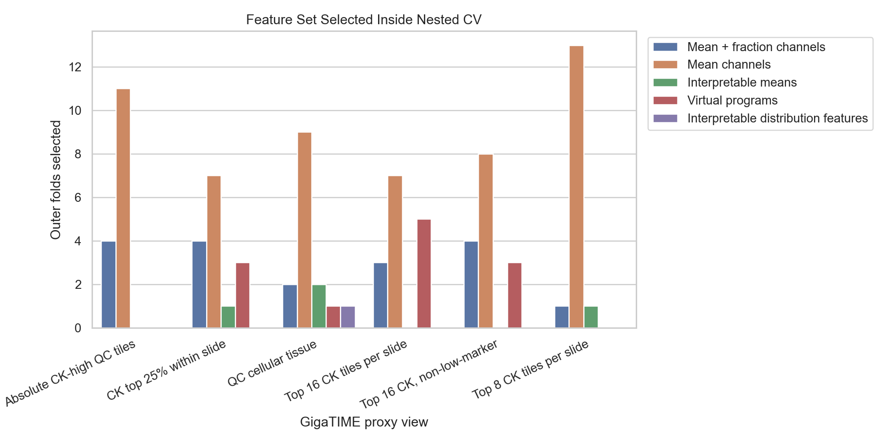
Full nested classifier report: `docs/clinical_her2_high_trust_tile128_nested_classifier_model_selection.md`.
Clinical/Site Confounder Check
This is the biggest cautionary result so far. HER2-low and HER2-zero slides are not balanced for TCGA source site or slide size. Non-image source-site and slide-size covariates alone can classify HER2-low versus HER2-zero better than the GigaTIME image features. That means the current TCGA signal may partly reflect cohort construction, scanner/site differences, or slide-selection artifacts.
| Covariate | HER2-low mean | HER2-zero mean | Low-zero delta | p |
|---|---|---|---|---|
| Slide file size MB | 100.486 | 278.961 | -178.475 | 1.45e-15 |
| Slide width | 61509.123 | 102679.066 | -41169.943 | 2.58e-12 |
| Slide height | 23300.702 | 31759.115 | -8458.413 | 6.49e-07 |
| Mean marker burden | 0.056 | 0.076 | -0.019 | 5.79e-04 |
| Mean virtual DAPI | 0.306 | 0.384 | -0.078 | 1.63e-04 |
| Mean virtual CK | 0.191 | 0.245 | -0.054 | 0.0017 |
| Histology group | imbalanced | 0.0413 | ||
| TCGA source-site group | imbalanced | 7.97e-10 |
Top 8 CK tile classifier comparison:
| Feature set | Features | Balanced accuracy | AUC |
|---|---|---|---|
| Clinical covariates | 8 | 53.6% | 0.512 |
| Slide-size covariates | 3 | 87.9% | 0.921 |
| Source-site covariates | 20 | 87.8% | 0.925 |
| Source-site + slide-size covariates | 23 | 89.7% | 0.965 |
| GigaTIME mean channels | 23 | 74.5% | 0.751 |
| GigaTIME + clinical + site/slide | 54 | 89.0% | 0.952 |
QC-cellular channel tests after clinical/site adjustment:
| Adjustment model | q<0.05 channels | Channels | Best q |
|---|---|---|---|
| Unadjusted | 4 | PD-1, CD4, CD3, CK | 0.0050 |
| ER/PR adjusted | 4 | PD-1, CD4, CD3, CK | 0.0083 |
| ER/PR + histology + stage | 6 | CD68, PD-L1, PD-1, CD4, CD3, CK | 0.0220 |
| Clinical + slide size | 0 | none | 0.3963 |
| Clinical + site/slide size | 0 | none | 0.2420 |
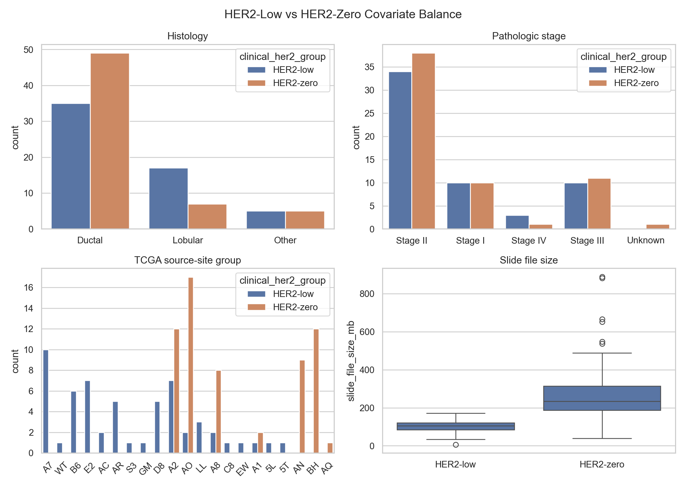
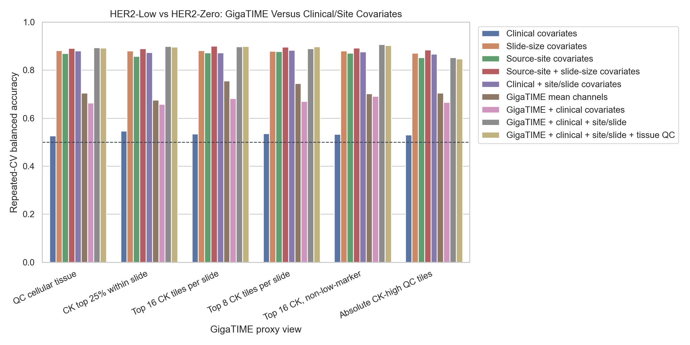
Full covariate sensitivity report: `docs/clinical_her2_high_trust_tile128_clinical_covariate_sensitivity.md`.
Matched Low-Versus-Zero Sensitivity
After finding strong TCGA source-site and slide-size imbalance, we built matched HER2-low/HER2-zero subsets. This is the most important new check because it asks whether the image signal still exists when obvious technical/source imbalance is reduced.
| Matched subset | Pairs | Same-source-site pairs | Median abs log-size diff | Median abs MB diff |
|---|---|---|---|---|
| Exact source-site, nearest size | 12 | 12 | 0.150 | 17.4 |
| Slide-size matched, caliper 0.25 | 14 | 2 | 0.017 | 2.0 |
| Slide-size matched, caliper 0.50 | 20 | 2 | 0.031 | 3.1 |
Top 8 CK tile leave-one-pair-out classifier comparison:
| Matched subset | Feature set | Pairs | Features | Balanced accuracy | AUC |
|---|---|---|---|---|---|
| Exact source-site, nearest size | Slide-size covariates | 12 | 3 | 66.7% | 0.729 |
| Exact source-site, nearest size | Source-site covariates | 12 | 3 | 50.0% | 0.500 |
| Exact source-site, nearest size | Source-site + slide-size | 12 | 6 | 62.5% | 0.771 |
| Exact source-site, nearest size | GigaTIME mean channels | 12 | 23 | 70.8% | 0.750 |
| Exact source-site, nearest size | GigaTIME + source-site/slide-size | 12 | 29 | 62.5% | 0.757 |
| Slide-size matched, caliper 0.25 | Slide-size covariates | 14 | 3 | 60.7% | 0.689 |
| Slide-size matched, caliper 0.25 | Source-site covariates | 14 | 12 | 82.1% | 0.768 |
| Slide-size matched, caliper 0.25 | Source-site + slide-size | 14 | 15 | 78.6% | 0.893 |
| Slide-size matched, caliper 0.25 | GigaTIME mean channels | 14 | 23 | 67.9% | 0.694 |
| Slide-size matched, caliper 0.25 | GigaTIME + source-site/slide-size | 14 | 38 | 71.4% | 0.791 |
| Slide-size matched, caliper 0.50 | Slide-size covariates | 20 | 3 | 65.0% | 0.685 |
| Slide-size matched, caliper 0.50 | Source-site covariates | 20 | 14 | 75.0% | 0.797 |
| Slide-size matched, caliper 0.50 | Source-site + slide-size | 20 | 17 | 85.0% | 0.873 |
| Slide-size matched, caliper 0.50 | GigaTIME mean channels | 20 | 23 | 67.5% | 0.623 |
| Slide-size matched, caliper 0.50 | GigaTIME + source-site/slide-size | 20 | 40 | 77.5% | 0.838 |
Top paired channel tests in the same top 8 CK proxy view:
| Matched subset | Channel | Pairs | Mean low-zero | Wilcoxon p | BH q |
|---|---|---|---|---|---|
| Exact source-site, nearest size | CD20 | 12 | -0.0201 | 0.0522 | 0.3472 |
| Exact source-site, nearest size | CK | 12 | -0.0886 | 0.0771 | 0.3472 |
| Exact source-site, nearest size | Ki67 | 12 | -0.0035 | 0.1514 | 0.4541 |
| Exact source-site, nearest size | PD-L1 | 12 | -0.0077 | 0.2036 | 0.4581 |
| Slide-size matched, caliper 0.25 | CK | 14 | -0.0561 | 0.0785 | 0.7064 |
| Slide-size matched, caliper 0.25 | CD11c | 14 | -8.57e-04 | 0.4263 | 0.7524 |
| Slide-size matched, caliper 0.25 | CD20 | 14 | 0.0237 | 0.5016 | 0.7524 |
| Slide-size matched, caliper 0.25 | CD4 | 14 | -2.60e-05 | 0.4631 | 0.7524 |
| Slide-size matched, caliper 0.50 | CK | 20 | -0.0696 | 0.0153 | 0.1378 |
| Slide-size matched, caliper 0.50 | CD20 | 20 | 0.0200 | 0.3300 | 0.7124 |
| Slide-size matched, caliper 0.50 | CD3 | 20 | 0.0148 | 0.4524 | 0.7124 |
| Slide-size matched, caliper 0.50 | Ki67 | 20 | 0.0033 | 0.4749 | 0.7124 |
Interpretation: GigaTIME mean channels remain modestly above chance in the matched subsets, around 0.675-0.708 balanced accuracy. But source-site and slide-size baselines remain competitive or stronger in the larger matched subsets. No paired channel test reaches BH q < 0.05. This keeps the HER2-low/HER2-zero signal worth studying, but it makes the current TCGA result unsafe as an independent HER2 biology claim.
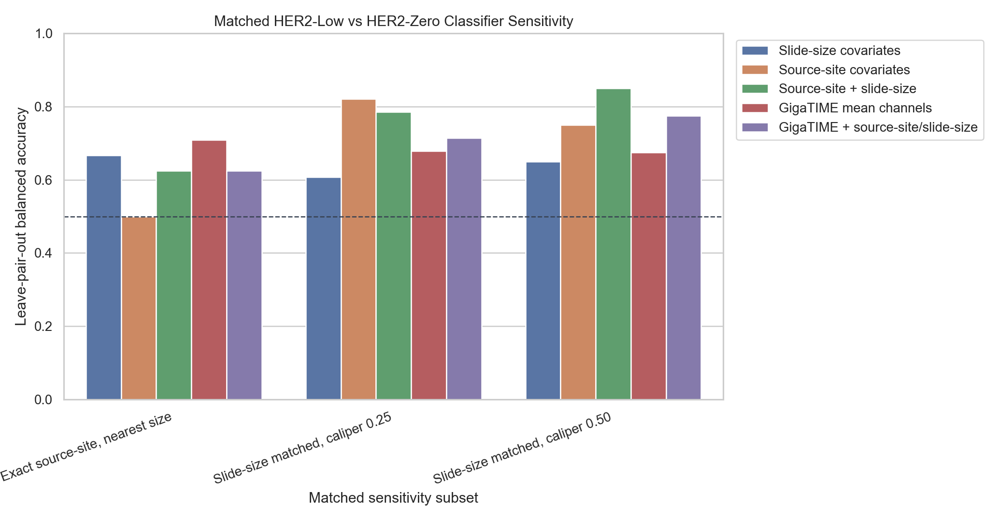
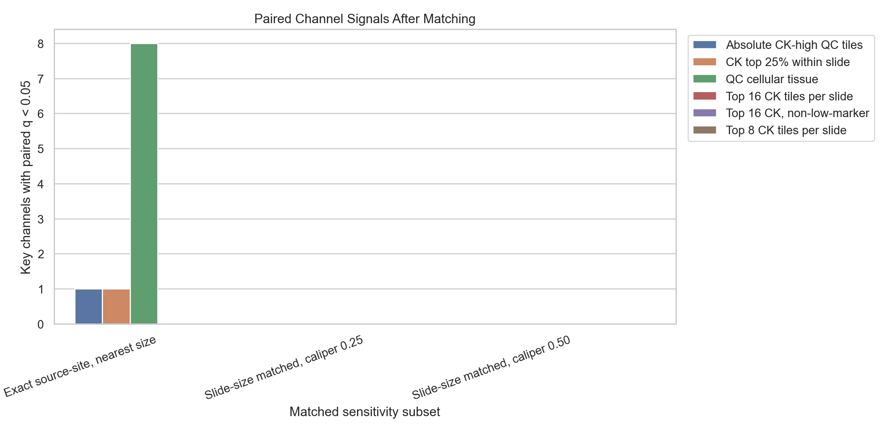
Full matched sensitivity report: `docs/clinical_her2_high_trust_tile128_matched_low_zero_sensitivity.md`.
Source-Site Generalization
We then asked whether the low-vs-zero classifier travels to held-out TCGA source sites. This is stricter than ordinary random cross-validation because all cases from one source site are removed from training and used as the test set.
| TSS | N HER2-low | N HER2-zero | N cases | Both classes |
|---|---|---|---|---|
| AO | 2 | 17 | 19 | yes |
| A2 | 7 | 12 | 19 | yes |
| BH | 0 | 12 | 12 | no |
| A8 | 2 | 8 | 10 | yes |
| A7 | 10 | 0 | 10 | no |
| AN | 0 | 9 | 9 | no |
| E2 | 7 | 0 | 7 | no |
| B6 | 6 | 0 | 6 | no |
Top 8 CK tile classifier comparison:
| Feature set | Validation | Features | Balanced accuracy | AUC |
|---|---|---|---|---|
| Slide-size covariates | Repeated stratified CV | 3 | 87.9% | 0.921 |
| Slide-size covariates | Leave source site out | 3 | 88.2% | 0.915 |
| Tissue/QC covariates | Repeated stratified CV | 4 | 58.1% | 0.623 |
| Tissue/QC covariates | Leave source site out | 4 | 50.7% | 0.478 |
| GigaTIME mean channels | Repeated stratified CV | 23 | 74.5% | 0.751 |
| GigaTIME mean channels | Leave source site out | 23 | 66.9% | 0.679 |
| GigaTIME + slide-size | Repeated stratified CV | 26 | 85.7% | 0.915 |
| GigaTIME + slide-size | Leave source site out | 26 | 83.7% | 0.894 |
GigaTIME mean-channel performance drop by feature view:
| Feature view | Random CV BA | Leave-site-out BA | Difference |
|---|---|---|---|
| QC cellular tissue | 70.5% | 61.7% | -8.8% |
| CK top 25% within slide | 67.5% | 61.4% | -6.1% |
| Top 16 CK tiles per slide | 75.5% | 60.1% | -15.4% |
| Top 8 CK tiles per slide | 74.5% | 66.9% | -7.6% |
| Top 16 CK, non-low-marker | 70.2% | 59.7% | -10.5% |
| Absolute CK-high QC tiles | 70.4% | 64.3% | -6.2% |
Interpretation: GigaTIME mean-channel performance drops under source-site holdout across every tested view. In the top 8 CK proxy view it drops from 74.5% balanced accuracy under repeated stratified CV to 66.9% under leave-source-site-out validation. Slide-size covariates remain very strong even under source-site holdout, reaching 88.2% balanced accuracy. This is a major warning that the current TCGA classifier is not source-independent HER2 biology.
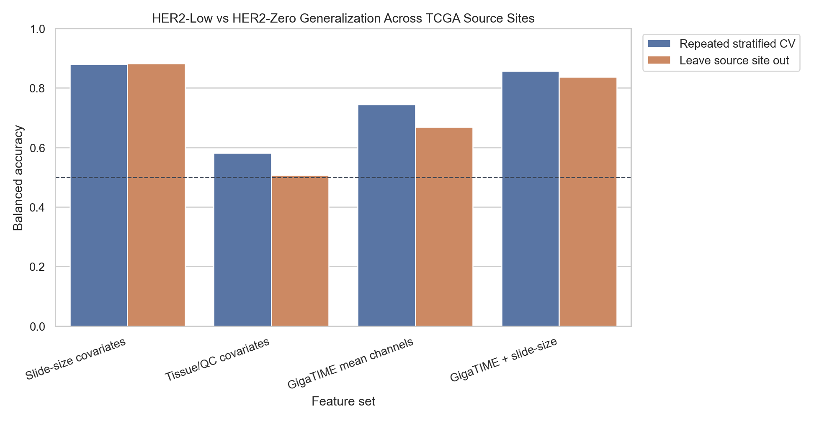
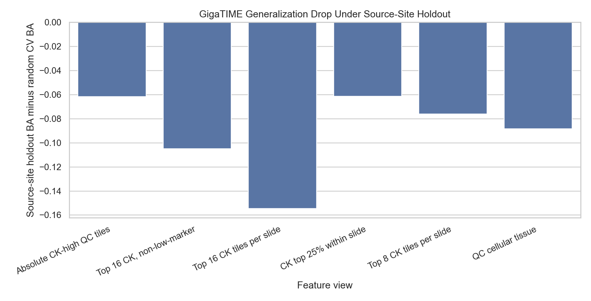
Full source-site generalization report: `docs/clinical_her2_high_trust_tile128_source_site_generalization.md`.
Within-Source-Site Sensitivity
Because source-site confounding is so strong, we restricted the analysis to TCGA source sites that contain both HER2-low and HER2-zero cases. Only 4 source sites qualify, giving 51 cases total: 12 HER2-low and 39 HER2-zero. This is small and imbalanced, so it is a stress test rather than proof.
| TSS | HER2-low | HER2-zero | Cases |
|---|---|---|---|
| A2 | 7 | 12 | 19 |
| AO | 2 | 17 | 19 |
| A8 | 2 | 8 | 10 |
| A1 | 1 | 2 | 3 |
Site-fixed channel tests ask whether HER2-zero remains higher than HER2-low after adding TCGA source-site fixed effects:
| Feature view | Channels tested | Channels q<0.05 | Best BH q |
|---|---|---|---|
| Absolute CK-high QC tiles | 23 | 1 | 0.0167 |
| CK top 25% within slide | 23 | 1 | 0.0446 |
| QC cellular tissue | 23 | 5 | 0.0284 |
| Top 16 CK tiles per slide | 23 | 0 | 0.0962 |
| Top 16 CK, non-low-marker | 23 | 0 | 0.0921 |
| Top 8 CK tiles per slide | 23 | 0 | 0.1128 |
Top 8 CK proxy view, top site-fixed channel tests:
| Feature view | Channel | N low | N zero | Beta zero-vs-low | p | BH q |
|---|---|---|---|---|---|---|
| Top 8 CK tiles per slide | DAPI | 12 | 39 | 0.0925 | 0.0049 | 0.1128 |
| Top 8 CK tiles per slide | CK | 12 | 39 | 0.0794 | 0.0309 | 0.1616 |
| Top 8 CK tiles per slide | Transgelin | 12 | 39 | -0.0026 | 0.0391 | 0.1616 |
| Top 8 CK tiles per slide | Caspase3-D | 12 | 39 | 0.0658 | 0.0405 | 0.1616 |
| Top 8 CK tiles per slide | CD8 | 12 | 39 | 0.0313 | 0.0415 | 0.1616 |
| Top 8 CK tiles per slide | CD138 | 12 | 39 | 0.0846 | 0.0422 | 0.1616 |
| Top 8 CK tiles per slide | CD20 | 12 | 39 | 0.0152 | 0.1666 | 0.4976 |
| Top 8 CK tiles per slide | Ki67 | 12 | 39 | 0.0034 | 0.1731 | 0.4976 |
Mixed-site classifier sensitivity in the top 8 CK proxy view:
| Feature set | Validation | N | Features | Balanced accuracy | AUC | Sensitivity | Specificity |
|---|---|---|---|---|---|---|---|
| Slide-size covariates | Leave mixed source site out | 51 | 3 | 53.2% | 0.729 | 0.897 | 0.167 |
| Tissue/QC covariates | Leave mixed source site out | 51 | 4 | 49.0% | 0.526 | 0.897 | 0.083 |
| GigaTIME key mean channels | Leave mixed source site out | 51 | 9 | 49.0% | 0.517 | 0.897 | 0.083 |
| GigaTIME all mean channels | Leave mixed source site out | 51 | 23 | 62.8% | 0.737 | 0.923 | 0.333 |
| Slide-size covariates | Repeated stratified CV | 51 | 3 | 56.0% | 0.834 | 0.897 | 0.222 |
| Tissue/QC covariates | Repeated stratified CV | 51 | 4 | 52.1% | 0.687 | 0.932 | 0.111 |
| Source-site one-hot | Repeated stratified CV | 51 | 3 | 48.3% | 0.536 | 0.966 | 0.000 |
| GigaTIME key mean channels | Repeated stratified CV | 51 | 9 | 50.5% | 0.588 | 0.872 | 0.139 |
| GigaTIME all mean channels | Repeated stratified CV | 51 | 23 | 66.7% | 0.759 | 0.889 | 0.444 |
Interpretation: this partially supports continued investigation but does not solve the confounding problem. Some site-fixed channel effects remain in QC-cellular and CK-high views, and all-channel GigaTIME classifiers retain some above-chance performance in the mixed-site subset. But the subset is tiny, key-marker-only classifiers weaken, and specificity is low. This is evidence for a possible within-site image pattern, not enough for a source-independent HER2 biology claim.
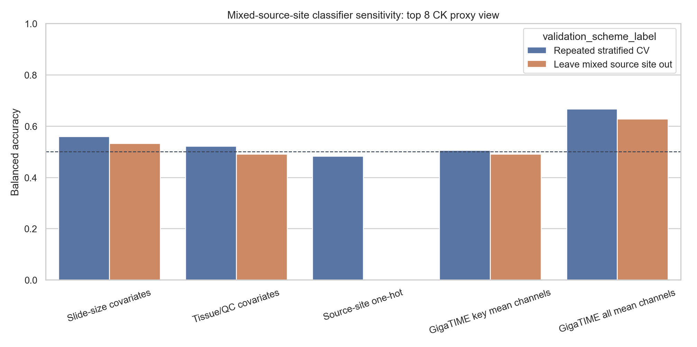
Full within-source-site report: `docs/clinical_her2_high_trust_tile128_within_source_site_low_zero.md`.
ER/PR Sensitivity
| Cleanup view | Unadjusted q<0.05 channels | ER/PR adjusted q<0.05 channels | ER/PR+ERBB2 adjusted q<0.05 channels |
|---|---|---|---|
| All sampled tissue | 8 | 7 | 4 |
| QC cellular tissue | 7 | 4 | 3 |
| CK-enriched top 50% | 7 | 4 | 3 |
| CK-enriched top 25% | 7 | 1 | 2 |
All-sampled-tissue channels ranked by ER/PR-adjusted q value:
| Channel | Unadjusted low-zero delta | Unadjusted q | ER/PR beta | ER/PR q | ER/PR+ERBB2 q | RNA n |
|---|---|---|---|---|---|---|
| CK | -0.0638 | 5.94e-04 | -0.0617 | 9.94e-04 | 0.0390 | 40 |
| PD-1 | -0.0395 | 5.94e-04 | -0.0377 | 0.0131 | 0.0265 | 40 |
| CD4 | -0.0238 | 8.19e-04 | -0.0227 | 0.0253 | 0.0193 | 40 |
| CD3 | -0.0243 | 8.89e-04 | -0.0231 | 0.0253 | 0.0193 | 40 |
| PD-L1 | -0.0130 | 5.94e-04 | -0.0127 | 0.0345 | 0.2525 | 40 |
| CD68 | -0.0054 | 5.94e-04 | -0.0052 | 0.0393 | 0.2379 | 40 |
| CD11c | -0.0033 | 5.94e-04 | -0.0033 | 0.0393 | 0.0735 | 40 |
| Ki67 | -5.34e-04 | 0.0194 | -3.30e-04 | 0.7781 | 0.2743 | 40 |
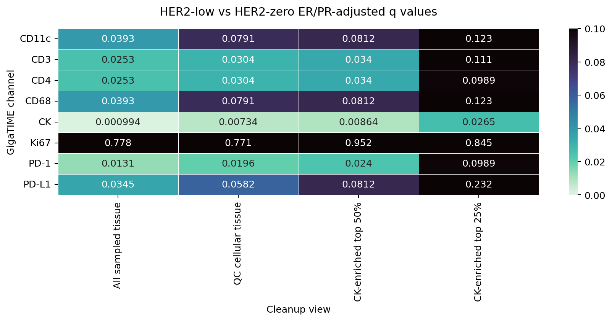
Run Agreement
The current strict 128-tile analysis was compared with the earlier 60-slide 256-tile run on 56 overlapping slide IDs. All 8 tested key channels kept the same HER2-low versus HER2-zero direction; 7 of 8 kept HER2-low lower than HER2-zero.
| Channel | 256-tile low-zero delta | 128-tile low-zero delta | Same direction | Both low lower |
|---|---|---|---|---|
| PD-1 | yes | yes | ||
| CD4 | yes | yes | ||
| CD68 | yes | yes | ||
| CD11c | yes | yes | ||
| CD3 | yes | yes | ||
| PD-L1 | yes | yes | ||
| CK | yes | yes | ||
| Ki67 | yes | no |
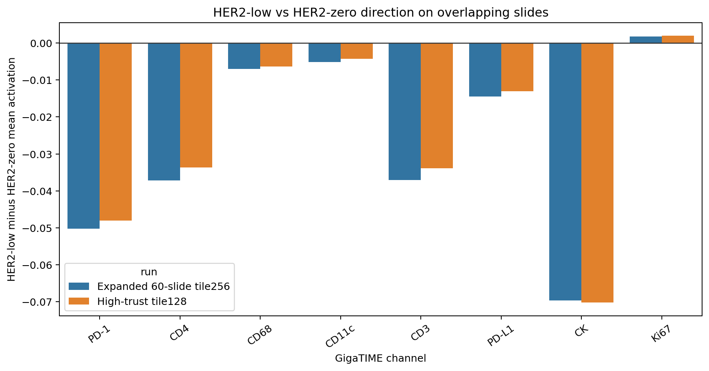
Local ERBB2 Gene-Level Validation
We extracted ERBB2 gene-level TPM from all local GDC STAR augmented gene-count files. This gives ERBB2 RNA context for 110 TCGA-BRCA cases, including 56 strict high-trust GigaTIME/HER2 cases and 40 HER2-low/HER2-zero high-trust cases. This is useful, but it is not isoform validation: these files do not contain transcript-level isoform proportions, PSI, junction evidence, or antibody-binding-domain information.
Clinical HER2 group summary from local STAR ERBB2 TPM:
| Clinical HER2 group | N | Median TPM | Q25 TPM | Q75 TPM |
|---|---|---|---|---|
| HER2-positive | 16 | 778.689 | 182.743 | 1519.483 |
| HER2-low | 20 | 83.446 | 53.232 | 156.939 |
| HER2-zero | 20 | 62.725 | 41.770 | 119.354 |
Pairwise gene-level ERBB2 tests:
| Comparison | N A | N B | Median A | Median B | AUC | p | BH q |
|---|---|---|---|---|---|---|---|
| HER2-positive vs HER2-low | 16 | 20 | 778.689 | 83.446 | 0.891 | 7.38e-05 | 1.11e-04 |
| HER2-positive vs HER2-zero | 16 | 20 | 778.689 | 62.725 | 0.919 | 2.14e-05 | 6.41e-05 |
| HER2-low vs HER2-zero | 20 | 20 | 83.446 | 62.725 | 0.605 | 0.262 | 0.262 |
Simple ERBB2-only reference classifier:
| Task | N cases | AUC | Best-threshold balanced accuracy |
|---|---|---|---|
| HER2-positive vs non-positive | 56 | 0.905 | 83.1% |
| HER2-low vs HER2-zero | 40 | 0.605 | 62.5% |
Interpretation: ERBB2 RNA strongly supports the HER2-positive label as a molecular sanity check, but it weakly separates HER2-low from HER2-zero. The low/zero ERBB2-only AUC is only about 0.605, so the current GigaTIME low/zero signal is not simply a strong gene-level ERBB2 expression separation.
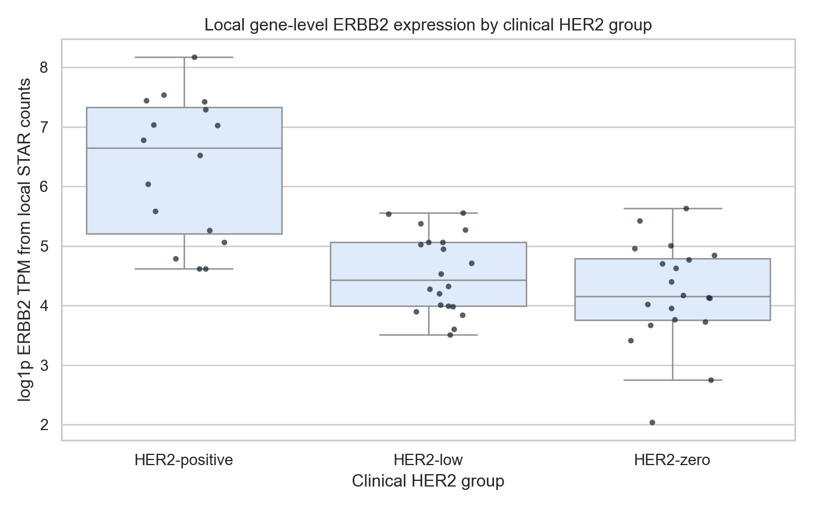
Low/zero GigaTIME channel correlations with gene-level ERBB2 are limited:
| Feature view | Channel | N | Spearman rho | p | BH q |
|---|---|---|---|---|---|
| All sampled tissue | CK | 40 | -0.321 | 0.043 | 0.693 |
| CK-enriched top 50% | CK | 40 | -0.236 | 0.142 | 0.693 |
| QC cellular tissue | CK | 40 | -0.226 | 0.160 | 0.693 |
| CK-enriched top 25% | CK | 40 | -0.221 | 0.170 | 0.693 |
| QC cellular tissue | PD-L1 | 40 | -0.206 | 0.201 | 0.693 |
| All sampled tissue | CD20 | 40 | -0.197 | 0.224 | 0.693 |
| QC cellular tissue | CD20 | 40 | -0.191 | 0.237 | 0.693 |
| All sampled tissue | CD68 | 40 | -0.186 | 0.250 | 0.693 |
After adjusting low-vs-zero channel tests for log ERBB2 TPM in the small RNA-overlap subset, 15 channel/view effects remain BH q < 0.05. This supports the idea that the GigaTIME low/zero signal is not fully explained by gene-level ERBB2 RNA, but it does not remove the stronger source-site, slide-size, and tissue-composition caveats.
| Feature view | Channel | N | Beta zero-vs-low adjusted | p | BH q |
|---|---|---|---|---|---|
| All sampled tissue | CD4 | 40 | 0.0339 | 0.004 | 0.021 |
| All sampled tissue | CD3 | 40 | 0.0338 | 0.005 | 0.021 |
| CK-enriched top 25% | CD4 | 40 | 0.0262 | 0.005 | 0.021 |
| CK-enriched top 25% | CD3 | 40 | 0.0267 | 0.005 | 0.021 |
| CK-enriched top 50% | PD-1 | 40 | 0.0499 | 0.006 | 0.021 |
| CK-enriched top 50% | CD4 | 40 | 0.0324 | 0.003 | 0.021 |
| CK-enriched top 50% | CD3 | 40 | 0.0326 | 0.003 | 0.021 |
| QC cellular tissue | PD-1 | 40 | 0.0588 | 0.004 | 0.021 |
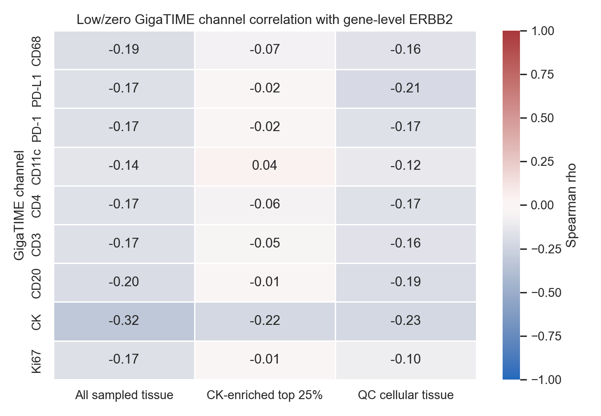
Full local ERBB2 validation report: `docs/clinical_her2_high_trust_tile128_local_erbb2_validation.md`.
HER2 Isoform Feasibility
After correcting the target paper to Guardia et al., we checked whether the local project can directly validate HER2 isoform biology. The answer is no for the current local files. We have gene-level STAR count/TPM files, which can support ERBB2 expression and RNA-program context, but we do not have transcript-level isoform quantification, raw reads, BAMs, or junction-count outputs in the current TCGA workspace.
| Audit item | Value |
|---|---|
| High-trust cases | 171 |
| Local STAR gene-count cases | 110 |
| High-trust cases with local STAR gene counts | 56 |
| Low/zero high-trust cases with local STAR gene counts | 40 |
| Local BAM files under data/tcga_brca | 0 |
| Local FASTQ files under data/tcga_brca | 0 |
| Local junction files under data/tcga_brca | 0 |
| Expression file has transcript_id | False |
| Expression file has junction columns | False |
| Analysis | Status | What it can support | Next action |
|---|---|---|---|
| Gene-level ERBB2 expression check | available_now | Sanity check that clinical HER2 labels broadly track ERBB2 RNA expression. | Use only as context, not as isoform validation. |
| Bulk RNA immune/stromal program validation | available_now_limited | Indirect validation of immune, epithelial, stromal, endothelial, and proliferation programs. | Continue treating as indirect support only; adjust for confounders. |
| HER2 isoform quantification like Guardia et al. | not_available_from_current_local_files | Nothing directly; gene-level STAR counts cannot estimate ERBB2 isoform proportions. | Requires short-read RNA-seq reads or an existing transcript-level isoform matrix from the paper/authors. |
| rMATS junction confirmation like Guardia et al. | not_available_from_current_local_files | Nothing directly right now. | Would require controlled-access BAM/FASTQ or author-provided junction/count matrices. |
| GigaTIME association with HER2 isoform/state labels | blocked_until_isoform_labels | Once labels exist, can test whether image features associate with isoform/state groups. | Ask Galante/Guardia group for TCGA sample-level HER2 isoform group/PSI table or reproduce their RNA-seq pipeline on appropriate reads. |
The safe conclusion is that GigaTIME features can be tested for association with HER2 isoform/state hypotheses only after we obtain sample-level isoform labels or reproduce the RNA-seq isoform workflow. The current H&E/GigaTIME work does not detect HER2 isoforms.
Full feasibility report: `docs/her2_isoform_validation_feasibility.md`.
What We Learned
- The strongest research signal is HER2-low versus HER2-zero, not HER2-positive diagnosis.
- HER2-low tends to show lower GigaTIME virtual immune/checkpoint, myeloid, and CK-associated activation than HER2-zero.
- The signal survives cellular-tissue cleanup, so it is unlikely to be only blank/background artifact.
- The signal weakens in strict CK-enriched tumor-focused views, suggesting broader tissue context may matter.
- The signal mostly survives ER/PR adjustment and remains directionally stable across overlapping 128-tile and 256-tile runs.
- The case-level driver check shows a real but imperfect pattern: many cases are stable, while a substantial manual-review subset may contain label noise, artifacts, sampling problems, or biological exceptions.
- The visual QC spot check raises a serious tissue-composition caveat: low-like tiles can be stromal/collagen-rich and not clearly tumor-rich.
- The quantified tissue-composition analysis strengthens that caveat: HER2-low has more low-marker tiles, and low-marker adjustment removes most channel effects.
- Stricter virtual tumor-rich proxy filters weaken individual channel tests but preserve exploratory low-vs-zero classifier performance, so the signal remains worth validating with real tumor-rich/pathologist review.
- Shuffled-label classifier checks show the low-vs-zero classifiers are not obviously random, but this remains post-hoc exploratory evidence.
- Nested model-selection checks reduce feature-set selection bias and still show above-null low-vs-zero classifier performance.
- Clinical/site covariate checks show a serious TCGA confounding risk: slide size and source site classify HER2-low versus HER2-zero better than GigaTIME features.
- Matched low-vs-zero sensitivity keeps modest GigaTIME signal but does not eliminate the confounder concern; source-site/slide-size baselines remain competitive and paired channel tests are not FDR-significant.
- Source-site held-out validation weakens GigaTIME performance while slide-size covariates stay very strong, so the current classifier is not source-independent HER2 biology.
- Within-source-site sensitivity partially supports continued investigation: some site-fixed channel effects and all-channel classifiers remain above chance, but the mixed-site subset is tiny and imbalanced.
- Local gene-level ERBB2 RNA strongly validates the broad HER2-positive label but weakly separates HER2-low from HER2-zero, so the low/zero GigaTIME signal is not simply a strong ERBB2 expression split.
- The current local RNA files are gene-level STAR count/TPM files, not transcript-level isoform or junction-count data, so Guardia-style HER2 isoform validation is not available yet.
- We should say image AI predicts or associates with HER2 state hypotheses, not that image AI directly detects HER2 isoforms.
Best Presentation Wording
In a strict high-trust female TCGA-BRCA diagnostic H&E cohort, using HER2 isoform/state biology from Guardia et al. as the motivating context, GigaTIME-derived virtual mIF features reproducibly associate with the HER2-low versus HER2-zero boundary. HER2-low tumors show lower virtual immune/myeloid/checkpoint and CK-associated signals than HER2-zero tumors, and low-vs-zero classifiers beat shuffled-label null tests even under nested feature-set selection. Local gene-level ERBB2 RNA validates the broad HER2-positive label but only weakly separates HER2-low from HER2-zero, suggesting the image signal is not just a strong ERBB2 expression split. However, clinical/site covariate, matched-subset, source-site held-out, and within-source-site sensitivity checks reveal major TCGA confounding risk: source-site and slide-size covariates classify HER2-low versus HER2-zero very well, matching does not fully remove the concern, GigaTIME performance drops when entire source sites are held out, and the mixed-site subset is small and imbalanced. These findings support a hypothesis-generating tissue-context observation and a clear validation plan requiring external/site-balanced cohorts, tumor-rich/pathologist review, and molecular validation; they do not support clinical HER2 diagnosis or direct HER2 isoform detection.
Best Next Step
The next strongest move is to validate outside the current confounded TCGA slice while doing manual pathology/QC review:
- Open the strongest label-consistent HER2-low and HER2-zero driver cases.
- Open the highest-priority opposite-profile and classifier-error cases.
- Ask a pathologist to review whether high-signal H&E regions are tumor-rich, immune-rich, stromal, necrotic, or artifact-prone.
- Rerun the key statistics using tumor-rich or pathologist-approved tile subsets before making stronger HER2-biology claims.
- Add tumor purity, subtype, stain/batch, and immune-deconvolution covariates if available.
- Look for external H&E plus real HER2 IHC/ISH/mIF or transcript/protein validation data.
- If isoform data are available, test whether GigaTIME features associate with ERBB2 isoform groups rather than only clinical HER2 labels.